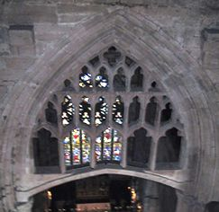
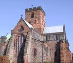
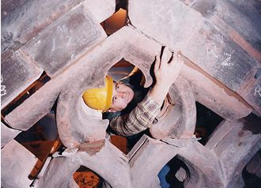

Renovation:
1
A particularly notable work of ours was on the North Crossing Arch in Carlisle
Cathedral.


The
North Crossing Arch, seventy feet above the Cathedral floor, carries the stone
tracery of the former window. Settlement of the bell tower in the centre of
the Cathedral over many years left the North Crossing Arch in a dangerous condition.
To repair the arch and tracery above involved careful support to the existing
fabric of the building and removal of the arch and tracery from the cathedral
to the stone mason's compound where the stone was cleaned, repaired and returned
to the cathedral. Before rebuilding, the arch was rebated and a rolled RSJ installed,
preventing further movement to this beautiful feature high in the Cathedral
roof.
